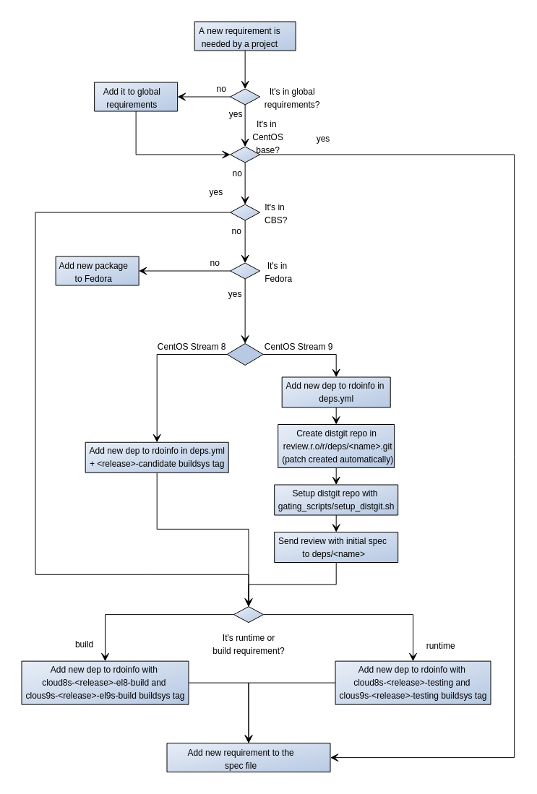
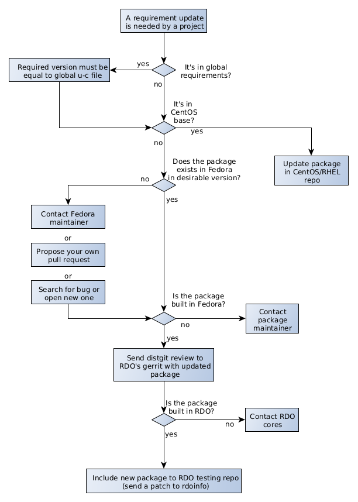

Requirements management in RDO
Introduction
OpenStack services usually need some pieces of software which are not developed as part of the project. They are are general purpose libraries (typically python modules) or services used in some way to run or build OpenStack packages as databases, messaging brokers, etc...
OpenStack requirements project defines the policies and processes to manage requirements in upstream projects from a global perspective.
Managing OpenStack requirements in RDO
RDO provides all requirements for packaged services in RPM format from their own repos, so that no software should be installed from external repositories. This packages can be provided by:
-
CentOS base repositories, which is the preferred source of packages whenever possible:
- For CentOS Stream 9: BaseOS, AppStream, CRB and HighAvailability.
-
Other CentOS SIG repositories (Virtualization, Storage, NFV, etc...). When a required package is being maintained by other CentOS SIG, it will be reused for RDO repos.
- RDO CloudSIG repositories. When a package is not available from previous repos, it will be provided in RDO repositores. Note that it's required that these packages exist previously in Fedora so that they can be rebuilt with minimal changes (if any).
If you have questions or special requests, don't hesitate in contacting RDO using our mailing lists or #rdo channel on OFTC.
Adding a new requirement to RDO
When a new requirement is needed for an OpenStack project included in RDO, package maintainers must follow this workflow:

Note that, typically new requirements are added only for the release of OpenStack under development, not for stable releases, although they may be accepted in previous releases if it's properly justified. Also, as we're currently maintaining releases on CentOS Linux 7, CentOS Stream 8 & 9, there are particularities in adding new requirements for each of them.
-
If the project follows global-requirements processes, make sure that the requirement has been added to global-requirements.txt and upper-constraints.txt files as described in the upstream documentation
-
Check if the new requirement is present in CentOS base channels. The easiest way to do this is using 'repoquery' command from a system running RPM based OS(CentOS/RHEL/Fedora):
# For CentOS Stream 9: repoquery --repofrompath=tmp,http://mirror.stream.centos.org/9-stream/BaseOS/x86_64/os \ --repofrompath=tmp2,http://mirror.stream.centos.org/9-stream/AppStream/x86_64/os \ --repofrompath=tmp3,http://mirror.stream.centos.org/9-stream/CRB/x86_64/os \ --repofrompath=tmp4,http://mirror.stream.centos.org/9-stream/HighAvailability/x86_64/os \ --disablerepo=* --enablerepo=tmp* "*<dependency>" # For CentOS Stream 8: repoquery --repofrompath=tmp,http://mirror.centos.org/centos/8-stream/BaseOS/x86_64/os \ --repofrompath=tmp2,http://mirror.centos.org/centos/8-stream/AppStream/x86_64/os \ --repofrompath=tmp3,http://mirror.centos.org/centos/8-stream/PowerTools/x86_64/os \ --repofrompath=tmp4,http://mirror.centos.org/centos/8-stream/HighAvailability/x86_64/os \ --disablerepo=* --enablerepo=tmp* "*<dependency>"If it's present, the desired package is already available to RDO users.
-
If the package is not in CentOS base repos, you can check if it has been already built by the CloudSIG using rdopkg:
rdopkg findpkg <package name>as, for example:
$ rdopkg findpkg python-eventlet name: python-eventlet project: python-eventlet conf: fedora-dependency upstream: https://src.fedoraproject.org/rpms/python-eventlet patches: None distgit: http://review.rdoproject.org/r/deps/python-eventlet.git buildsys-tags: cloud7-openstack-ocata-release: python-eventlet-0.18.4-2.el7 cloud7-openstack-ocata-testing: python-eventlet-0.18.4-2.el7 cloud7-openstack-pike-release: python-eventlet-0.20.1-2.el7 cloud7-openstack-pike-testing: python-eventlet-0.20.1-2.el7 cloud7-openstack-queens-release: python-eventlet-0.20.1-6.el7 cloud7-openstack-queens-testing: python-eventlet-0.20.1-6.el7 cloud7-openstack-rocky-release: python-eventlet-0.20.1-6.el7 cloud7-openstack-rocky-testing: python-eventlet-0.20.1-6.el7 cloud7-openstack-stein-release: python-eventlet-0.24.1-3.el7 cloud7-openstack-stein-testing: python-eventlet-0.24.1-3.el7 cloud7-openstack-train-release: python-eventlet-0.25.1-1.el7 cloud7-openstack-train-testing: python-eventlet-0.25.1-1.el7 cloud8-openstack-train-release: python-eventlet-0.25.2-3.1.el8 cloud8-openstack-train-testing: python-eventlet-0.25.2-3.1.el8 cloud8-openstack-ussuri-release: python-eventlet-0.25.2-3.el8 cloud8-openstack-ussuri-testing: python-eventlet-0.25.2-3.el8 cloud8-openstack-victoria-candidate: python-eventlet-0.25.2-3.el8 cloud8-openstack-victoria-release: python-eventlet-0.25.2-3.1.el8 cloud8-openstack-victoria-testing: python-eventlet-0.25.2-3.1.el8 cloud8s-openstack-train-testing: python-eventlet-0.25.2-3.1.el8 cloud8s-openstack-ussuri-release: python-eventlet-0.25.2-3.1.el8 cloud8s-openstack-ussuri-testing: python-eventlet-0.25.2-3.1.el8 cloud8s-openstack-victoria-release: python-eventlet-0.25.2-3.1.el8 cloud8s-openstack-victoria-testing: python-eventlet-0.25.2-3.1.el8 cloud8s-openstack-wallaby-release: python-eventlet-0.30.0-1.1.el8 cloud8s-openstack-wallaby-testing: python-eventlet-0.30.0-1.1.el8 cloud8s-openstack-xena-candidate: python-eventlet-0.31.1-1.el8 cloud8s-openstack-xena-release: python-eventlet-0.31.1-1.el8 cloud8s-openstack-xena-testing: python-eventlet-0.31.1-1.el8 cloud8s-openstack-yoga-testing: python-eventlet-0.31.1-1.el8 cloud9s-openstack-wallaby-testing: python-eventlet-0.30.2-1.el9s cloud9s-openstack-xena-testing: python-eventlet-0.31.1-1.el9s cloud9s-openstack-yoga-testing: python-eventlet-0.31.1-1.el9s centos-distgit: https://git.centos.org/rpms/python-eventlet master-distgit: http://review.rdoproject.org/r/deps/python-eventlet.git review-origin: null review-patches: null tags: dependency: null maintainers: - amoralej@redhat.com - jcapitao@redhat.com - ykarel@redhat.comNote that the version of the package included in repositories is given by the CBS tags applied to each package (shown under buildsys-tags section for each package). Tags have a format cloud9s-openstack-<release>-<phase> where:
- release: is the OpenStack release name, as Wallaby, Xena or Yoga.
- phase:
candidatephase is assigned to packages to be rebuilt in CBS but not pushed to any RDO repository.el<centos_version>-buildis assigned to packages that only required to build other packages but are not a runtime requirement for any other package. (e.g centos_version can be '9s' or '8')testingphase means that the package is used in deployments using RDO Trunk repo and published in a testing repo, but not official CloudSIG repository.releasephase means that is published in the official CloudSIG repository. This phase is only available after a RDO version has been officially released not for the one currently under development.
For example, the package included in cloud8s-openstack-xena-release will be published in the CloudSIG repo for xena. The CBS tags flow will be: - Runtime requirements: candidate -> testing -> release - Build requirements: candidate -> el8-build or el9s-build
Note that, for the release currently under development (Yoga right now), testing and el9s-build phase will be available. The package included in cloud9s-openstack-yoga-testing will be the one used to deploy from RDO Trunk Master repositories and it will be automatically pushed to cloud9s-openstack-yoga-release at RDO Yoga is officially released and published.
If the package is found for the required CBS tag, it's already in RDO repositories and no more actions are needed to add it to the repos.
-
In case that the dependency is not in CentOS base or CloudSIG repo, you can check if it has been built by other SIGs in CBS web interface. You can use wildcards in the packages search expression. If you find the desired dependency, you can open a ticket in RDO Jira board requesting the inclusion of the package in RDO repos. RDO Core members will handle the request.
-
If the new package is not in CBS, you must check if it's packaged in Fedora using the Koji Web Interface. If the package exists, you need to open a review to rdoinfo project in RDO gerrit instance.
For CentOS Stream 8 and 9, you need to add the new dependency to
deps.ymlfile as in this example:# in deps.yml - project: python-ssh-python name: python-ssh-python conf: fedora-dependencyFor CentOS Stream 8 only, you also need to add buildsys-tag in
buildsys-tags/cloud8s-openstack-yoga-candidate.yml# in buildsys-tags/cloud8s-openstack-yoga-candidate.yml - project: python-ssh-python buildsys-tags: cloud8s-openstack-yoga-candidate: python-ssh-python-0.9.0-1.el8Where: -
projectandnamemust be the name of the main package (the same as in fedora). -confmust befedora-dependency. - Inbuildsys-tagssection a new line for the candidate tag in the OpenStack release in development (cloud8s-openstack-yoga-candidate) with the required NVR (name-version-release), which must be the same one found in Fedora replacing fcXX part in release by el8. For example, for python-ssh-python the build is python-ssh-python-0.9.0-1.fc36, so in buildsys-tags/cloud8s-openstack-yoga-candidate.yml, cloud8s-openstack-yoga-candidate must point to python-ssh-python-0.9.0-1.fc36.Once merged this review will be enough to rebuild the Fedora package in the CentOS Build System for CentOS Stream 8.
For CentOS Stream 9, a few more steps are required to be able to rebuild the patch in CentOS Build System. After the review in rdoinfo repo is merged, some changes in config need to be done in the config which will be automatically triggered. You can check when the distgit for the new dependency is created by monitoring if it appears in https://review.rdoproject.org/r/admin/repos/deps/
. Once the repo is available, you can propose a review to build the package. We have a tool which does the work: setup_distgit.sh
$ git clone https://review.rdoproject.org/cgit/gating_scripts $ cd gating_scripts $ bash -x setup_distgit.sh google-benchmark google-benchmark-1.6.0-1.fc36 yoga 9s $ cd workdir/<project_name> $ git diffBasically, the script clones the new repo, downloads the Fedora build and dispatches SPEC and sources files to the right place.
If you’re ok with the change, submit it. Note: this last step is for CentOS Stream 9 only.
This review will rebuild the Fedora package in the CentOS Build System for CentOS Stream 9 and make it available to be pushed to the next CBS phase.
-
When the packages doesn't exist even in Fedora you need to add the package following the New package process. Note that a Fedora packager needs to participate in this process. While RDO core members may maintain the new package for common requirements used by different projects, dependencies for specific project must be maintained in Fedora by the project team. Once the package is included in Fedora repos you can create a gerrit review as explained in step 5.
-
Once the package is rebuilt in CBS (review in step 5 is merged) you can push it to the next phase, this means testing (for runtime dependencies) or el9s-build (for build-time dependencies). This is done by sending a new review to rdoinfo project adding a new line under
buildsys-tagsto bothbuildsys-tags/cloud9s-openstack-yoga-testing.ymlandbuildsys-tags/cloud8s-openstack-yoga-testing.ymlfile for the new tag as in this example:# in buildsys-tags/cloud8s-openstack-yoga-testing.yml buildsys-tags: cloud8s-openstack-yoga-testing: python-stestr-3.2.0-3.el8 # in buildsys-tags/cloud9s-openstack-yoga-testing.yml buildsys-tags: cloud9s-openstack-yoga-testing: python-stestr-3.2.0-3.el9sOnce this review is merged, the tag will be applied to this build and the package will be added to the testing repo for Yoga (note that some delay, up to 30 minutes is expected).
-
After the package is available in the repos, you can add it to the list of Requires or BuildRequires in your package spec file. Note that optional dependencies not used in default or common configurations should not be added as Requires but installed only when needed.
Updating a requirement in RDO CloudSIG repositories
There are some rules to follow when a requirement update is needed by a OpenStack project. Following diagram summarizes the considerations to update the dependencies in RDO.

If the dependency is included in upstream OpenStack global requirements project, the required version should be equal (exceptions will be shown below) to
the version in upper-constraints file
for the appropiate OpenStack release (requirements project has stable/\
Packages provided in CentOS Stream OS repos
- For packages provided in CentOS Stream OS repos, the preferred option is to consume those packages from OS whenever possible, even if versions are below the ones in upper-constraints.txt file. If OpenStack requires newer versions of those packages to work properly (for example, an OpenStack project requires a minimal version of the dep which is newer that the one in CentOS) there are two options:
- Request a package update in CentOS by opening a bug in RHEL product. This bug will be evaluated following the RHEL process.
- Add it to RDO repository following the process described in Adding a new requirement to RDO. Note that this may impact other packages using it in the Operating System so this option should be minimized.
Packages not provided in CentOS Stream OS repos
- The required dependencies not included in the CentOS OS are provided in the RDO repos. Before updating a dependency in RDO, the package must be updated to the required version in Fedora. If it has not been updated first you can:
- Contact Fedora package maintainer or search for open bug against component, example component:python-migrate, if bug does not exist, open a bug for Fedora product requesting the update.
-
Or you can directly propose to update fedora package by creating your own pull request, following Fedora packaging guide and Fedora CI - Pull Requests. Once the pull request merged, the package must be built by its maintainer. Building Fedora’s packages can be monitored on Koji.
-
Once the package is build in Fedora, you can update the requirement in RDO. For CentOS Stream 9, you need to rebuild the package first by sending a review to the RDO Gerrit instance in the distgit project
deps/<package name>in the branchc9s-<openstack version>-rdo. RDO provides the script setup_distgit.sh to ease the preparation of the dependency update review by importint content from Fedora. i.e. if you need to update python modulefooto version 1.0.0 in OpenStack Zed and the package is ready in fedora aspython-foo-1.0.0-1.fc37you should execute:$ git clone https://review.rdoproject.org/cgit/gating_scripts $ cd gating_scripts $ bash -x setup_distgit.sh python-foo python-foo-1.0.0-1.fc37 zed 9s $ cd workdir/python-foo $ git diffBasically, the script clones the new repo, downloads the Fedora build and dispatches SPEC and sources files to the right place.
If you’re ok with the change, commit it and send the review. Note that, in some cases, changes are required to build fedora packages for CentOS. It is usually a good idea to test new package with mock or rpm-build.
-
Once the patch in
deps/<dependency>is merged, the package is built and tagged in CBS but will not be available in the RDO repositories. The next step is to include the package in RDO Testing repo for the appropiate OpenStack release. This is done by sending a patch to the rdoinfo project, adding it to the filebuildsys-tags/cloud9s-openstack-<openstack release>-testinglike this example. -
Once the package exist in testing tag it will be available in the RDO Trunk repositories to be used in jobs or update in rpm spec. For stable releases (non master) an automatic task will also propose review to rdoinfo to upddate the package the corresponding
releasetag in the same OpenStack release in rdoinfo repo. Once that patch is merged, the update will also appear in the CloudSIG official CentOS mirror.
Contact us
If you have questions or special requests about requirements, don't hesitate to contact RDO community members using our mailing lists or #rdo channel on OFTC.